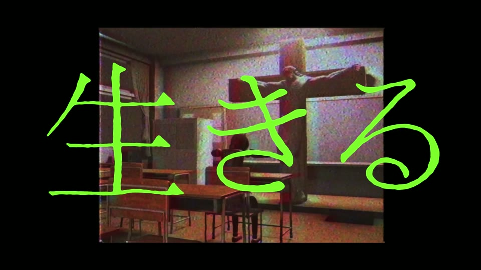
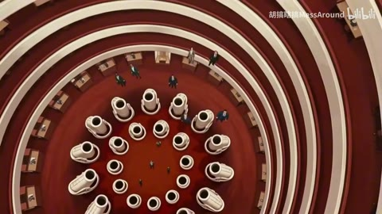

← 案例图谱H38 / 主要视觉研究样本
一个叫惟由的女孩决定去死【风华回战2025//人物向MAD】
如幽女怨怼之物 · 4407播放快照 · <10万 · B站原作 ↗
冷色、竖排日记与涂鸦遮脸共同形成主观情绪；密字压过人物是表达选择，也会损失可读性，应说明取舍。

约31.200秒 · 案例代表帧从画面里找依据
这一例先看什么
窄幅实拍、黑涂鸦遮脸、胶片框和红色骑士段形成统一情绪包装，表演本身来自特摄素材。
审美判断
冷蓝暗景上的手写日记字偏细，荧绿大字和白卡对比明确；密集手写增殖段有意压过人物，不保证全文可读。
迁移到自己的题材
人物短片、剧情提案、广告小故事、关系重组、讽刺、科幻伦理、生活反转。
教学提问：这一镜增加了什么新信息？删掉它，动机、情绪或因果会不会丢失？
带画面的分析单元
图像标出取样时间，对应观察中的关键状态。单帧不能独立证明运动，连续性请结合摘录。表达作用与应用场景是教学解读，复现路线是建议，不是原作者工程还原。
分析单元 01 / 0—10秒
赛事手机拼贴／地图／递归照片
实际观察
手机、地图、邮票和照片分层，模拟相机UI与递归小窗，最终赛事标。
表达作用（教学解读）
让多个时间、视角或人物关系同时出现；通过对位建立联系，而非只提高画面数量。
具体应用场景
记忆、对话、关系对照、主观视点、多人角色介绍、跨素材呼应。
复现建议（非原作者工程还原）
手机框透视贴图、相机UI、照片缩放旋转、分层平移与有限递归。
直出判断：机制易做；该段赛事共享包装，不归为本UP独创
常见误用：窗口太多无主次，眼位错位、边框挤脸，层的出现没有叙事理由。
分析单元 02 / 10—28秒
窄画幅／冷灰蓝／手写日记竖字
实际观察
真人女性近景置于黑边窄画幅，右上有小号手写竖排日期与文字，微弱色散和薄雾感。
表达作用（教学解读）
把阅读顺序变成观看顺序；用字重、位置与停留表达强调、犹豫或压迫。
具体应用场景
观点短片、歌词视觉、人物宣言、章节、情绪高潮；先决定哪些词必须读懂，哪些只是纹理。
复现建议（非原作者工程还原）
裁切加黑底、低饱和冷调，文字分列排版、透明度与轻抖动。
直出判断：黑边/手写字/色散/冷调容易；需有合适字体或手写素材
常见误用：每个字都弹跳、整句停留不足、所有文字同时争主位。严肃叙事里无理由的回弹会削弱重量。
分析单元 03 / 28—44秒
荧绿大字／黑场／噪声反色
实际观察
黑底小街景叠荧绿色大字，接黑场和暗室人物；真人面部有噪声和反色处理。
表达作用（教学解读）
把阅读顺序变成观看顺序；用字重、位置与停留表达强调、犹豫或压迫。
具体应用场景
观点短片、歌词视觉、人物宣言、章节、情绪高潮；先决定哪些词必须读懂，哪些只是纹理。
复现建议（非原作者工程还原）
字体放大、画中画、黑场、反色/色阶、随机噪声与扫描线。
直出判断：文字/画中画/反色噪声容易
常见误用：每个字都弹跳、整句停留不足、所有文字同时争主位。严肃叙事里无理由的回弹会削弱重量。
分析单元 04 / 44—84秒
涂鸦遮脸／日记竖字／旧片划痕
实际观察
黑色笔触遮盖部分人物脸，右侧竖字更新，眼部特写与伤口/硬币细节；可见细长纵向划痕。
表达作用（教学解读）
用少量形状、方向和重复建立性格，让图形与人物一起表达轻盈、秩序或紧张。
具体应用场景
青春、角色介绍、音乐视觉、活动包装、清楚的图形风格。
复现建议（非原作者工程还原）
粗笔刷遮罩需跟踪脸部，字层换段、胶片划痕与颗粒，轻微通道偏移。
直出判断：划痕/文字容易；准确脸部跟踪遮罩需逐镜处理
常见误用：形状种类与颜色都无限增加；图形仅为填空；不顾人物视线与轮廓。
分析单元 05 / 84—104秒
黑白胶片窗／红色单色／二值化冲击
实际观察
小胶片框里黑白人物，接红色调骑士动作；高反差黑白冲击帧，后暗背景小窗和颗粒。
表达作用（教学解读）
短暂中断视觉连续性，强调接触、转折或心理断裂；其价值来自前后的对比。
具体应用场景
打击点、快速连接、记忆跳跃、段落转折；需要根据内容选择强度。
复现建议（非原作者工程还原）
film框贴图、阈值二值化、红色映射、短模糊；原骑士动作选段。
直出判断：框/二值化/红调/模糊容易；动作来自源片
常见误用：把闪烁当节奏本身；没有稳定画面作参照；为掩盖动作不清持续加闪。
分析单元 06 / 104—136秒
虚焦日记／抹脸人物／夕色剪影
实际观察
虚焦人物和公园，黑色涂鸦遮住人脸；角色清晰脸、夕照远景与侧脸，竖排小字持续。
表达作用（教学解读）
决定什么值得看、什么退到感受层；清晰与模糊、占满与留空之间的关系塑造语气。
具体应用场景
回忆、亲密、孤独、人物介绍、信息减负、画面间的呼吸。
复现建议（非原作者工程还原）
虚焦与景深、遮罩跟踪、字层、冷暖段落对比。
直出判断：虚焦/排字/调色容易；抹脸遮罩需跟踪
常见误用：模糊所有层；细字落在高亮区域；浅色误认为高级；没有清楚的主焦点。
分析单元 07 / 136—148秒
手写字增殖／背景叠化／水平故障带
实际观察
大号白手写文字越叠越密，底下人物镜头淡显淡隐，水平黑噪声带短暂出现。
表达作用（教学解读）
把短暂破坏作为失控、断裂、冲突或数字材质的提示。
具体应用场景
赛博题材、记忆中断、身份不稳、高潮强调；也可短时掩护连接。
复现建议（非原作者工程还原）
多组文字层错位叠加、淡入淡出，背景交叉溶解；水平条mask+位移/噪声。
直出判断：文字增殖/叠化/故障带容易；文字密度会压低人物与可读性
常见误用：全程持续导致麻木；色散让脸和字长期看不清；把所有亮度变化算成切镜。
分析单元 08 / 148—179.562秒
白卡小字／红调黑底标签／黑白拥抱
实际观察
白卡居中小字接红色骑士，再是纸格与文字叠加，后半黑白脸部和拥抱配小字、竖字。
表达作用（教学解读）
建立段落、材质和情绪的一致性；颜色变化可以承担信息，而不只是美化。
具体应用场景
多片源混剪、人物立场、回忆/现实区分、冷暖转折、品牌统一。
复现建议（非原作者工程还原）
字卡、黑底窄标签、纸纹网格、黑白曲线与柔和淡出；保留原片表演。
直出判断：字卡/标签/网格/黑白容易；情绪表演需原素材
常见误用：所有镜头同一滤镜；肤色被破坏；饱和度代替焦点；色彩含义前后矛盾。
用连续画面核对
保留原研究的多段局部摘录。片段含音轨不代表已听审；本资料不评价音乐卡点或对白节奏。
短时变化怎样理解
87.12–89.12秒一次明确连接；140–144秒文字主结构延续，底图叠化另记；共享赛事片头不计UP主体能力。
把镜头连接、版式更新、局部图层变化和镜内运动分开记录。所查窗口是下限，不是全片平均或AI／人工排名。
原始逐窗记录 →这次练习的约束
写一句人物欲望，再用“道具—动作—反应”三镜讲清一次转折。静音播放仍要看出信息变化，音频另行制作与核验。
先写“我希望观众明白／感到什么”，再选本页的一种手法。完成无效果基础版后再加层；解释新增层带来的收益和代价。
打开练习与复盘表 →来源、观看范围与制作归属
实际检查范围：实际查看45张4秒概览0–176（3表），4.4–6.32与87.12–89.04共50密集帧（12.5/s）；140–143.96另34帧（约8.33/s，3表）全看。源179.562333秒1080p25fps，三段4秒摘录。约0–10秒赛事包装独立于主体。未听审、未连续完整音画观看；不依据标题或简介推断真人作者心理。
制作线索：如幽女怨怼之物，第一方4407，2025-09-30。作者自述约两个月制作并感谢他人建议，人物向MAD/剪辑/假面骑士标签；并非静止漫画作品。未公开工程或完整零AI流程。
边界：低播放补充，作者说明制作和建议；不转录歌词或将创作意图当音画核验。精确遮脸跟踪需逐镜处理。
播放快照保存时间（UTC）：2026-10-20T23:07:42.517337+00:00。H30制作方式为推定；同源改编、仿作和转载依原记录标注。
原始案例记录 · 选样表把你的判断留下来
笔记仅尝试保存在本机浏览器；浏览器策略可能限制本地文件存储，重要内容请导出。
沿着同一问题继续阅读

AI26细节、反应与转折
科幻设定需要空间、道具和人物反应共同讲清；红白中庭与冷色城市的好看不能替代角色关系和连续性检查。
主要样本7个分析单元
 H39
H39细节、反应与转折
跨作品素材、演奏细节与光环意象重组开放剧情；区分画面关系的新增与原片已有的光效、表演。
主要样本7个分析单元
 H48
H48意象、色彩与纪实
访谈引入、作品与幕后、群像三联、品牌字卡再回访谈形成概览可见结构；同一团队素材风格一致，同时带来样本相关性。
主要样本6个分析单元